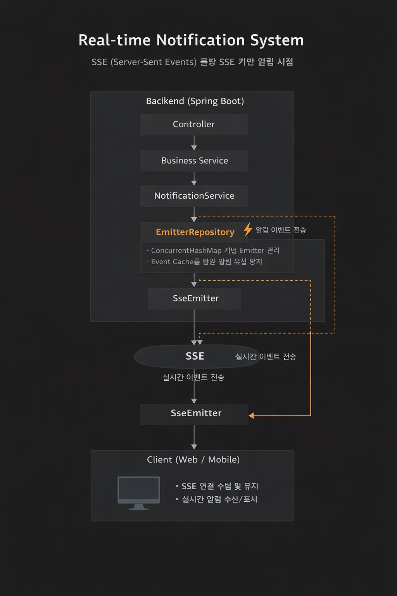

Frans – 프랜차이즈 주문 및 결제 관리 시스템
Spring Boot / Spring Security / MyBatis / JPA / SSE / AWS EC2
본사(HQ)와 가맹점 간 주문 및 결재 프로세스를 관리하는 서비스입니다.
주문 상태 변경 및 결재 요청 발생 시 사용자에게 실시간 알림을 제공하여
업무 흐름을 효율적으로 관리할 수 있도록 설계했습니다.
Tech Stack
- Spring Boot
- Spring Security
- JPA
- MyBatis
- SSE (Server-Sent Events)
- AWS EC2
Role
- Notification Domain 설계 및 구현
- Statistics Domain 구현
- Product 조회 기능 구현 (CQRS)
Real-time Notification System (SSE)
주문 및 결재 프로세스에서 발생하는 이벤트를 사용자에게 실시간으로 전달하기 위해
SSE(Server-Sent Events)를 활용한 알림 시스템을 구현했습니다.
- 가맹점 → 본사 주문 요청 시 알림 전송
- 본사 → 주문 상태 변경 시 알림 전송
Notification Architecture
비즈니스 로직에서 알림 이벤트가 발생하면 Notification Service가 알림을 생성하고
SseEmitter를 통해 클라이언트에게 이벤트를 전송합니다.
EmitterRepository로 사용자별 SSE 연결을 관리하고 Event Cache를 활용하여 알림 유실을 방지했습니다.

CQRS 구조
읽기와 쓰기 로직을 분리하기 위해 CQRS(Command Query Responsibility Segregation) 구조를 적용했습니다.
Command는 JPA로, Query는 MyBatis로 구현하여 역할을 명확히 나눴습니다.
Statistics Domain
서비스 운영을 위한 통계 데이터를 제공하기 위해 Statistics 도메인을 구현했습니다.
MyBatis 기반 조회 쿼리를 작성하여 주문 데이터를 기반으로 통계 정보를 제공하도록 구현했습니다.
GitHub Repository 열기